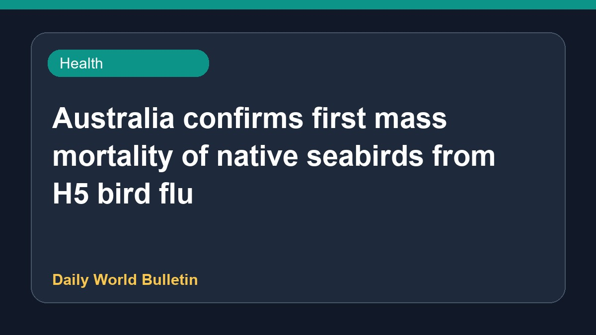

Australia confirms first mass mortality of native seabirds from H5 bird flu

Australia has confirmed its first mass mortality event involving native seabirds due to H5 bird flu. Authorities have warned that the H5N1 strain is likely to spread further following this initial episode. Suspected mass bird flu deaths have also been reported in a second state, with officials cautioning that this development marks only the beginning of the crisis. Updated detections in wild birds have reached 62 cases as monitoring and containment efforts continue across the affected regions.
Original source: Health News Sources
Australia confirms first mass mortality event from H5 bird flu in native seabirds - ddindia.co.in ↗
Australia confirms first mass mortality event from H5 bird flu in native seabirds - ddindia.co.in ↗